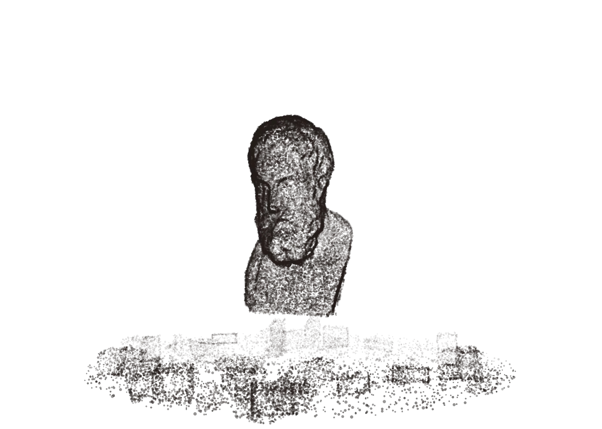

01out now
The Philosophy
of Sociology
The rules nobody wrote down. Who is enforcing them, and what happens when you ask.
Read it link pendingThe Aporia
a student philosophy magazine
Issue 01 · out now

001 / the monument
Bronze. On a plinth. Above eye level. A man thinking so hard it looks like it hurts.
Around him, a vocabulary you were supposed to have already.
Most people take one look and decide philosophy is for someone else. That is a fair reading of the packaging.
002 / ἀπορία
noun. From the Greek ἀπορία: a-, without, and poros, a passage. No way through.
In Plato it is a specific moment. The argument runs out of road. Someone who was sure a minute ago has nothing left to say.
Socrates thought that was where the thinking started.
Most students read it as the sign to stop.
We named the magazine after the stuck part. It is the only part that was ever interesting.
003 / the fracture
Epicurus taught in a garden behind his house. Anyone could come. Women did, which scandalised Athens. So did a slave called Mys.
He thought philosophy had one job: to make an ordinary life go better. Pain, fear, what to want, who to have dinner with. If an argument didn't help with any of that, he wasn't interested.
“Let no one delay the study of philosophy while young, nor weary of it when old.”

the same ideas, undressed
Nothing was lost in that translation. The hard part was never the words.
004 / one field at a time
Philosophy on its own goes in circles. Pointed at something, it gets useful. So every issue borrows a discipline and presses on the things everyone there agreed to stop asking about.
01out now
The rules nobody wrote down. Who is enforcing them, and what happens when you ask.
Read it link pendingThe Aporia
02in progress
The tools have started deciding things for us. Nobody voted on the criteria.
The Aporia
03undecided
Genuinely open. If a field deserves the treatment, tell us which one and why.
Pitch a subject link pendingThe Aporia
005 / your turn
You don't need a thesis. You need something you noticed and can't put down, and about a thousand words to chase it.
Write it the way you'd explain it to a friend who is interested but not impressed.
We would rather publish an interesting mistake than a safe summary.